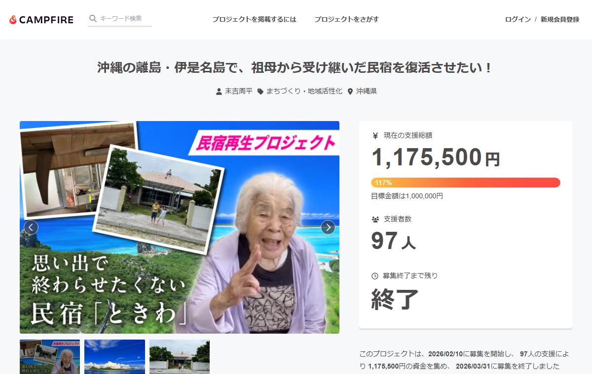
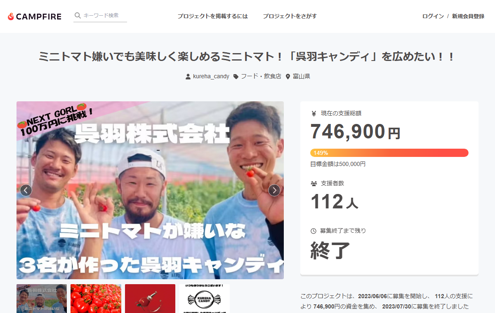
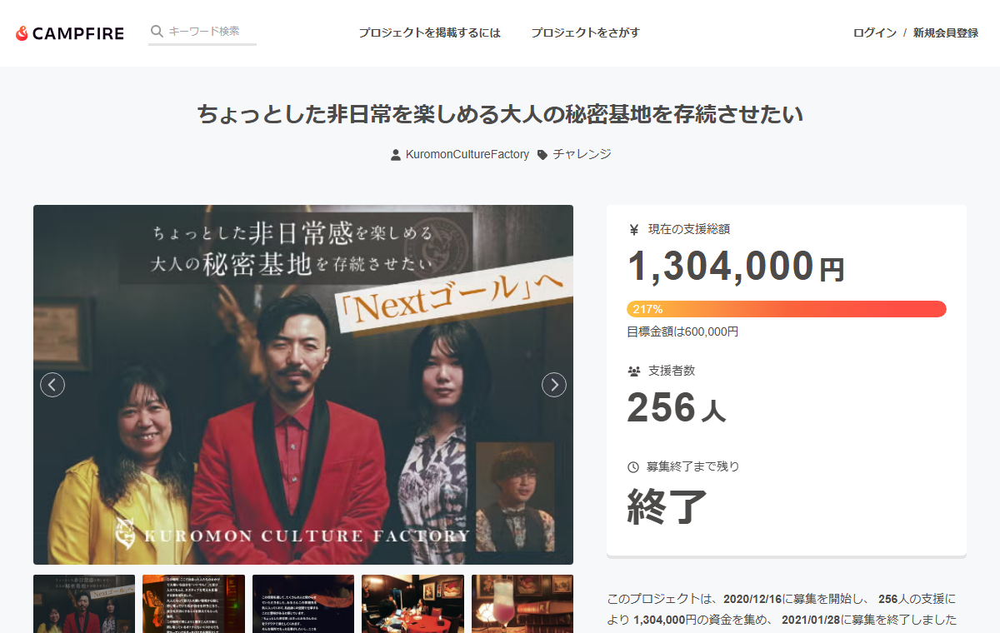
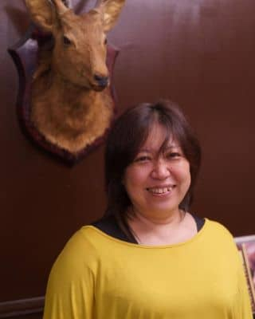
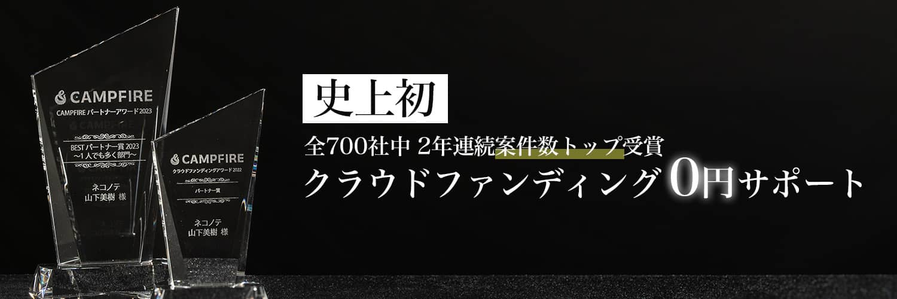

クラウドファンディングは、資金を集める手段であると同時に、顧問先やお客様がやりたいことを前に進める道具として使えます。
クラウドファンディングでできることは、資金を集めることだけではありません。
かかる費用（会場・制作・チームの稼働）を先に集められます。
プロジェクトの内容を発信できるメディアになります。地方から全国まで広がることがあります。
リターンを選んでくださった方は、公開の前に決まった受け取り手です。連絡先もつながります。
応援してくれる人が可視化されます。
本気で走らない場合でも、どれくらい反応があるかを見るテストマーケティングとして使えます。
「これ、クラウドファンディングでやればよかったのに」と思う案件がたくさんあります
この資料で「お客様」と書いているのは、協業先の顧問先・お客様のことです。クラウドファンディングを実施される方（CAMPFIREでいう起案者）を指します。
協業には、山下が裏方に徹する形と、お客様の前に出る形の2つがあります。どちらにするかは、案件ごとに選べます。
どちらにするかは、お客様にとってどちらが安心かで決めています。「専門家が入ってくれるなら心強い」という方もいれば、「いつもの担当の方だから何でも話せる。知らない人に相談するのは不安」という方もいます。お客様の顔が見えている協業先に選んでいただくのが、いちばん間違いがないと思っています。
まずは協業先の方と、オンラインでお話しするところから始められます。お客様がどんな状況で、何をやりたいと思っていらっしゃるのかを伺って、クラウドファンディングでできそうかを一緒に見ます。お客様に同席いただく必要はありません。企画がまとまっている必要もありません。
※ CAMPFIREへの申請が済んだあとの案件は、紐付けができないためお受けできません。
| 基本サポート | オプション | |
|---|---|---|
| 協業先の費用 | 0円 | 別途費用 |
| 受けられること |
初回オンライン相談 LINEでの質問・通話相談 審査対応のアドバイス リターンの壁打ち |
本文の添削 テキスト文書の納品 テキストページの納品 サムネイルデザイン リターン設定 ディレクション |
| お客様の前に出るか |
協業先のご希望で決めます （ご希望がなければ裏方のまま） |
協業先のご希望で決めます （ご希望がなければ裏方のまま） |
| 費用を支払う人 | — |
協業先 またはお客様 （案件ごとに選べます） |
オプションが必要になったときだけ、別途費用でご案内します。
オプションの費用は、内容に合わせてお見積もりします。金額をお伝えしてから進めますので、先に費用が発生することはありません。
山下はCAMPFIRE公式キュレーションパートナーです。案件が紐付いていると、お客様がCAMPFIREへ支払う手数料17%の一部が、パートナー報酬として山下に入ります。この仕組みがあるので、成功報酬をいただかずにサポートに入れます。
そのうえで協業のときに0円にできるのは、お客様のことをいちばんよくご存じの方と、一緒に進められるからです。背景やお人柄、これまでの経緯を一から伺うところから始めなくてよいので、山下は審査やリターンのご相談に最初から集中できます。だから、基本サポートまでを0円でご案内しています。
0円でご案内できるのは、基本サポートまでです。初回のオンライン相談、LINEでの質問と通話相談、審査対応のアドバイス、リターンの壁打ちが入ります。本文の添削やページの納品などのオプションは、別途費用でのご案内になります。
協業先がご自身の料金をどう決めるかに、山下は関与しません。
案件が見えた段階で、その方に向けた企画案をお作りします。

1回目はご自身だけで挑戦され、目標に届きませんでした。その後にご依頼をいただき、2回目はサポートに入って117%で終えています。このあとの「利用者の声」に出てくる、末吉周平さまの案件です。
CAMPFIREのページを見る
「沢山の方から問い合わせを頂き、メディアにも取り上げられ、地方から全国まで認知されるキッカケとなりました」という声をいただきました。
CAMPFIREのページを見る
大阪・日本橋の地下にあるレンタルスペースです。コロナ禍で利用の予約が入らなくなり、家賃だけが出ていく状態になりました。3か月分の家賃を目標に、この場所を続けたいと呼びかけた案件です。リターンは知り合いの作品やセミナーばかりでしたが、256人が支援してくださいました。
CAMPFIREのページを見るクラウドファンディングには審査があります。中身が同じでも、書き方だけで止まってしまうことがあります。よくあるのは、その方の事情や背景が伝わりきらないまま、お願いの部分が先に出てしまう形です。
言い換えたのは見せ方だけで、その方がもともと持っている思いは変えていません。同じ話のどこを先に出すか、という違いです。
ほかにも、薬機法・景表法・医療法にあたる表現や、「唯一」「画期的」「100%」といった言い切りすぎる表現は、直しを求められることがあります。申請後の差し戻しは、ほとんどの案件で通る道です。
そこから先を一緒に見ていくのが、山下の役目です。表現の言い換えも、申請後の差し戻しへの対応も、基本サポートの中でご相談いただけます。申請より前にご連絡をいただいていれば、そのあとの差し戻し対応まで入ります。
支援してくださる方には、気持ちで応援したい方と、内容そのものを楽しみにしてくださる方がいます。どちらにも選べるものが並んでいると、支援が広がりやすくなります。
山下自身のクラウドファンディングでは、知り合いのアーティスト作品・セミナー・商品をリターンにしました。提供してくださった方には原価で出していただき、セミナーの提供者には0円で受講者のリストを受け取る形にしていただきました。支援してくれた人はその商品に魅力を感じている人なので、提供者にとっても見込み客になりました。
クラウドファンディングを始める前に、正直にお伝えしたいことがあります。
公開すれば知らない方からも支援が集まる、というものではありません。最初に動いてくださるのは、その方をすでによく知っている方々です。
サポートを受けた方へのアンケート（9名）では、支援者の内訳がはっきり分かれました。
そのため、山下がサポートに入っても、支援そのものを連れてくることはできません。山下にできるのは、審査を通るところまで並走することと、リターンや発信のご相談に乗ることです。
山下自身も、クラウドファンディングを公開している間は毎日SNSに投稿を続け（一文だけの日もありました）、運営2人でそれぞれ1,000件ほどDMを送りました。講演会も本も、知らない方が突然足を運んだり買ったりすることは、めったにありません。だからこそ、公開前のファン集め・仲間集めが必要になります。
集まった金額の平均も差がありました。発信を続けて達成した案件は約118万円、発信が少なく届かなかった案件は約29万円です。山下が携わった案件のうち、公開中の発信の様子を記録できている54件を集計したものです。
クラウドファンディングの準備期間（やると決めてから終わるまでの2〜3か月）は、この土台をつくる時間でもあります。
サポートを受けた方へのアンケート（9名）では、9名全員が「満足」以上、9名全員が「他の方に推奨したい」以上と回答しています。


2023年、CAMPFIRE本社にて表彰
もう少し詳しく知りたい方は、こちらもご覧ください。
ネコノテのサービス全体：https://nekonote.help/
サポート実績のまとめ：https://note.com/chiby_smile/m/m2809bd426e70
| できること | できないこと・条件 |
|---|---|
| 審査の表現チェック（薬機法・景表法・医療法など） | 対応しているプラットフォームはCAMPFIREのみです |
| 差し戻し対応（指摘の内容に合わせて、直し方をご相談します） | 集客の代行や支援額の保証はしません。発信内容のアドバイスまでです |
| リターン設計のアイデア出し | 審査の可否はCAMPFIRE側が決めるため、掲載を保証することはできません |
| オプションの料金は前金です。掲載不可・起案者都合の中止・完成後のキャンセルでは返金がありません |
ご相談は、早い段階ほどできることが増えます。CAMPFIREへの申請が済んだあとの案件は、紐付けができないためお受けできません。
直接ご依頼いただく場合は、基本サポートで55,000円をいただいています。協業の場合は、お客様のことをいちばんよくご存じの方と一緒に進められます。経緯やお人柄を一から伺うところから始めなくてよいので、山下は審査やリターンのご相談に最初から集中できます。そのため、基本サポートまでを0円でご案内しています。
対応しているプラットフォームはCAMPFIREのみです。他のプラットフォームの案件には対応できません。
オプションは案件ごとに選べるので、必要になったタイミングでご相談いただけます。
協業先に決めていただきます。お客様にとってどちらが安心かで選んでください。ご希望がなければ、山下がお客様とやり取りすることはありません。窓口は協業先だけになります。前に出る場合も、窓口は協業先のままです。お客様に山下の関与をお伝えいただくことも、もちろん問題ありません。
何かあればいつでも、いつもやり取りしている連絡先からご連絡ください。